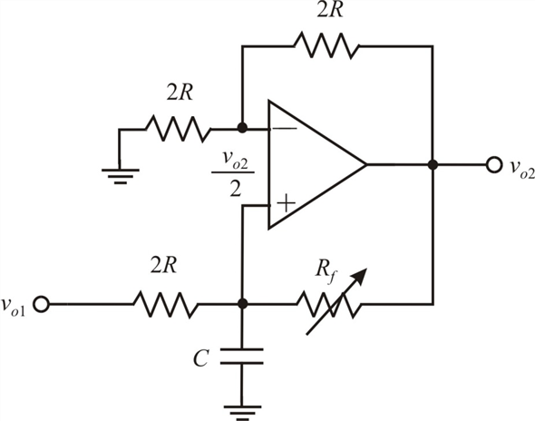

Substitute for  .
.
Simplify further.
Refer to Figure 17.9 in the text book.
The quadrature oscillator is based on the second integrator.
As an active filter, the loop is damped to locate the poles in the left half of the s-plane. Here in the quadrature oscillator amplifier 1 is connected as an inverting miller integrator with a limiter in the feedback for amplitude control. Amplifier 2 is connected as a non- inverting integrator.
Draw the circuit without the limiter.

Figure 1
Use voltage division principle to write the expression of the fraction of its input voltage.
Apply Kirchhoff’s current law at the non-inverting terminal of the op-amp.
Substitute for .
Simplify further.
If we disregard the limiter and,
Break the loop at X .
The expression for the loop gain is,
According to definition of loop gain in the circuit is ,
Write the expression for the roots of the quadratic equation.
Substitute , and .
For ;
Neglect the higher order terms.
The poles of the characteristic equation are in the right half of s-plane.
Simplify further the expression of the poles.
Therefore, the poles of the characteristic equation are in the right half of s-plane and the poles location is.